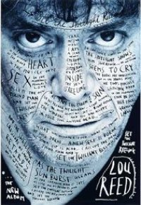
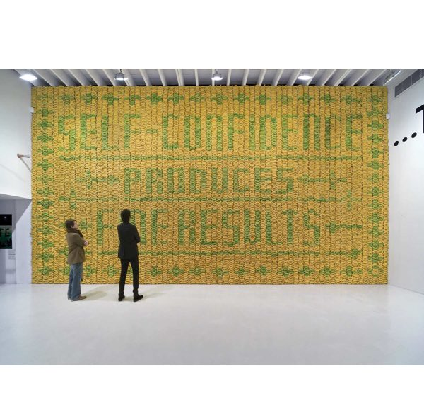
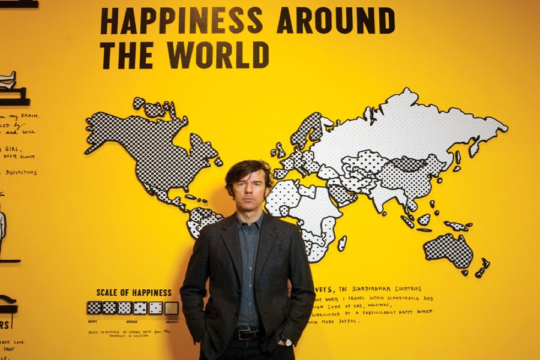

Stefan Sagmeister
Graphic designer, conceptual typographer and performance artist.
Stefan Sagmeister is a world renowned graphic designer, conceptual typographer and performance artist. His famous hand rendered typography, wide variety of materials and techniques, and use of controversial imagery come together to make up the identity of his work. Having the tendency to push his audience to their ethical limit with his work, he may be seen as somewhat questionable but is undoubtably interesting all the same. He is renowned for focusing on strong themes as sexuality, humour and in some instances slightly disturbing imagery and human emotion in his work. Some may say he is a nonconformist, looking for that shock factor and that his work verges on bad taste, all to prove a strong reaction. I want to question this. In this essay I will look further into his works. I will research his methodology and try to show the true uniqueness and style of his designs.
Biography

Stefan Sagmeister was born in Begenz, Austria in 1962. At the age 15 he knew he wanted to be a graphic designer.
“I wrote little articles for a small magazine and discovered I like doing the layout for it better.”-Stefan Sagmeister when questioned by design and life magazine.
At 19 he made the decision to move to Vienna to apply to a school of applied arts. However he was rejected on the grounds that “just about everyone was better at drawing” than he was. His hopes weren't lost and he continued to follow a design career and on a second attempt applying to a private art school he was accepted. He was soon introduced to the musician Alexander Goebel, who after seeing his talent, introduced him to the Schausipelhaus Theatre Group. Stefan was asked to design posters as part of the Gruppe Gut collective. Although in these early designs Stefan did not show much of his current methods, nudity, humour and borderline inappropriateness, his posters did poke fun of traditional theatrical images by paring them with rough, grungy, punk typefaces. These works were influenced by the anarchist graphics and punk rock album sleeves from the 1970’s, a style that he has replicated many times throughout his career as a designer.
Hong Kong

Sagmeister furthered his artistic education in one of America’s leading Art and Design universities as he received a scholarship at the Pratt Institute of Brooklyn.
After only three years in America, Sagmeister was forced to return to Austria, Austria being one of the few countries at the time to still have the law of conscription. He was a conscientious objector and was allowed to work outside Vienna in a refugee centre. Sagmeister moved to Hong Kong in 1991 and joined an advertising agency as a graphic designer, ‘Leo Burnett’. Through the design company, in his own true fashion, Sagmeister decided he would test the cultural boundaries in an advertisement he was asked to create for the Hong Kong Design Award, organised by 4A’s in 1992. Created by factory painters the poster depicted a traditional Cantonese style, however, the image was of 4 male bare backsides, obviously inspired by the organisers company name gracing us with the great Sagmeister humour. The image was seen as extremely inappropriate by the reserved culture and beliefs of Asian business men and women. This lead to many agencies boycotting the ceremony. Sagmeister received a lot of complaints but revealed his favourite asking;
“Who’s the asshole who designed this poster?”
New York
In 1993 he returned to NewYork. He joined Tibor Kalman’s graphic design studio M&Co, which was the company he aspired to as a Pratt University student. However only a few months into his dream career, Tibor Kalman announced that he was closing the studio to focus solely on his role as editor of ‘Colors’ magazine. It was at this moment Sagmeister decided to step out on his own and Sagmeister Inc. was created.
Sagmeister’s focus for the company was to break into the music industry and design album covers for the musicians he loved. The record labels which he approached had turned him don in the beginning so he grabbed the opportunity to design the CD for a friend’s album. Mountains of Madness by H.P. Zinker.
Album Art
For the cover he used an optical illusion, when the CD cover is in the plastic case the image shows the image of a calm mans face. However when the cover his taken from the red plastic the mans face shows fury in various tones of red, white and green. This album cover earn Sagmeister his first grammy nomination for album cover, where he would go on to win another three. So after a slow start and keeping the company small, they eventually were creating album covers for notable artists such as Lou Reed, David Byrne and The Rolling Stones.
For Lou Reed’s 1996 album ‘Set the Twilight Reeling’, Sagmeister portrait of Reed which was tinted indigo in a paler indigo CD case. When cover is removed, the image of Lou Reed emerges clearer, as if from the twilight.
For David Byrne, Sagmeister Depicted the artist as a plastic doll on the cover of his 1997 Album Feelings.
For Rollings Stones’ 1997 Bridges to Babylon album and tour. Sagmeister struggled to persuade the band’s management to listen to his ideas. He wanted a motif of a lion inspired by an Assyrian sculpture in the British Museum. His argument included that the lead singer was a Leo star sign and the that the image could easily be used in tour merchandise
AIGA Poster
Although the music industry was the main focus, Sagmeister also took commissions from clients outside of the industry. One of these commissions lead to a very famous and one of his most acknowledged designs, his almost infamous lecture posters for AIGA in 1999. It showed a grainy photograph of Sagmeister’s naked torso which one of his employees had cut the details of the speech onto his skin using an exact knife. The idea came about through the play on the name of the speech ‘Cutting Away at Modernism’. Although not exactly hysterical, this poster showed his dark provocative humour, if you can see past the mutilation. The inclusion of his ‘style=fart’ quote also cut into his skin alongside the details is intentionally there to try lighten and lift the dark mood of the poster.
Again this poster drew a lot of attention evenly split between love and hate for the designer. This unconventional method of portraying a message drew criticism from those saying it was inappropriate and could be a negative influence on others, and normalising self -harm. On the other side his fans had nothing but praise, they believed he displayed the scarifies that he was willing to make to portray a message and that it shows his the pain and effort he puts into his designs.
“…we tried to visualise the pain that seems to accompany most of our design projects. Our intern Martin cut all the type into my skin. Yes, it did hurt real bad.” -Stefan Sagmeister
Typographic Work
- 

In 2008 Sagmeister began working on typographic works. These were created under the name of ‘Things I have learned in my life so far’. These were published in magazines, as posters, appeared on billboards and even in a Japanese annual report. The phrases were found in an old diary he had kept and says they were inspired by his grandfather.
“The series have been influenced by my grandfather (who was educated in sign painting). I grew up with many of his pieces of wisdom around the house, by American artist Jenny Holzer as well as the rustic wooden signs available in tourist stores all over my hometown of Bregenz in Austria”
Sagmeister has stated in the past that he is..
“not obsessed with typefaces and find the selection of just the right one a rather tedious exercise. Using my handwriting eliminates that process, personalizes the piece and can be interpreted as an anti-computer statement all in one easy move.” -Stefan Sagmeister
Sagmeister & Walsh


- 
In 2012 a huge decision was made by Sagmeister inc., they where to go in a new company direction.
“Nineteen years after the founding of Sagmeister Inc… We are renaming the company to Sagmeister & Walsh.”

To show this massive development in the direction of the company Sagmeister referred to the original announcement of the opening of Sagmeister inc., were he posed naked in his office with his arms folded 19 years before hand. The new idea was to stage the same image however this would include a naked Jessica Walsh on a pile of new papers and magazines beside him. Clearly showing the beginning of the new company ‘Sagmeister and Walsh’.
Jessica Walsh was a 25 year old talented graphic designer working as the art director at ‘Print Magazine’. After emailing Sagmeister to look through her portfolio if work she got the response almost immediately; “When do you want to come work for me?”. The next day she quit her job to work with Sagmeister.
With all the changes to the company the logo also changed from an ‘S’ to a ‘&’.
In 2012 the duo put on the their first show together, “The Happy Show”, at the Institute of Contemporary Art in Philadelphia. The show contained visual data and graphic representation of happiness throughout a community set in the colours of yellow black and white. Sagmeister also used his own handwriting style to just but also as a juxtaposition to the fixed visual data.
- Design.designmuseum.org,. 'Stefan Sagmeister / Design Museum Collection : -
- Design/Designer Information'. N.p., 2004. Web. 4 Dec. 2015.
- Harper, Laurel. Radical Graphics. San Francisco: Chronicle Books, 1999. Noisey. (2015). From Lou Reed to David Byrne: Meet the Man Responsible for Music's Most Memorable Album Artwork. [Online Video]. 18 November. Available from: https://www.youtube.com/watch?v=seu6zMRUbgo&feature=youtu.be. [Accessed: 01 December 2015].
- Wikipedia,. 'Stefan Sagmeister'. Web. 4 Dec. 2015.